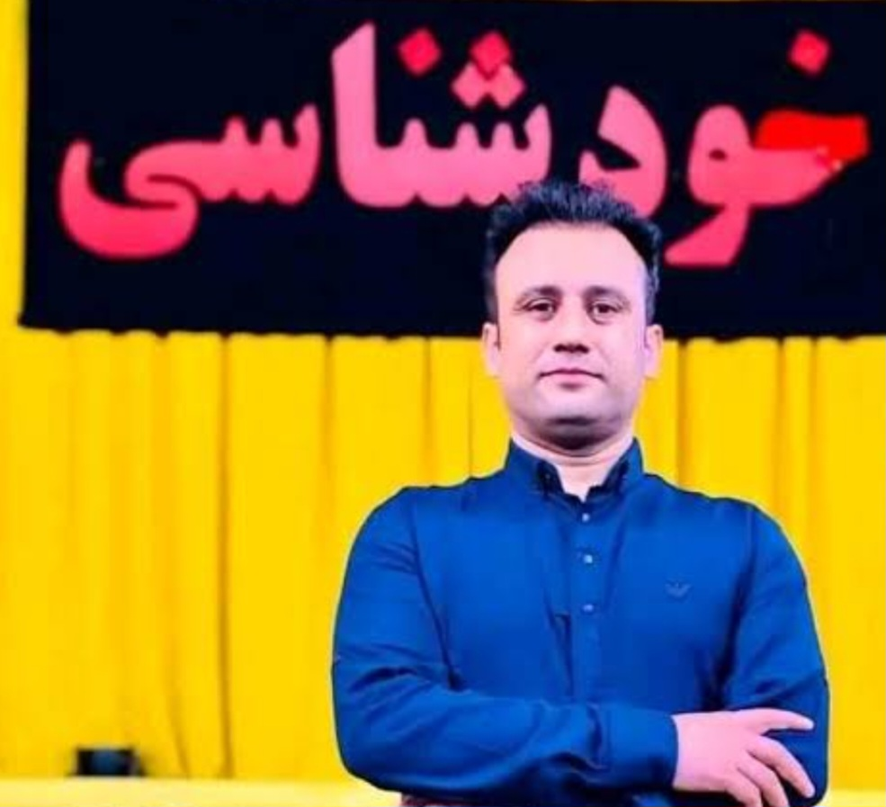

داکتر جمشید رسا

استاد جمشید رسا و یا داکتر جمشید رسا یکی از چهره های شناخته شده
افغانستان میباشد. او بیشتر نظر به فعالیت های علمی، اجتماعی و روانشناسی
اش بین مردم افغانستان محبوب است و بدون شک یکی از تاثیر گذار ترین چهره
ها بر نسل نوین خصوصا جوانان و نو جوانان میباشد. داکتر جمشید رسا متولد
سال ۱۳۶۴ در پروان شهر چاریکار میباشد. ایشان مکتب و تحصیلات ابتدایی
خویش را در مکاتب مختلف نسبت به تحولات شغلی پدر به اتمام رسانید. داکتر
جمشید رسا دوره لیسه را در مکتب غلام حیدر خان کابل در سال ۱۳۸۲ به پیان
رسانید و بعد از سپری کردن آزمون کانکور راهی تحصیلات عالی خویش در
پوهنتون طبی کابل شد، وی در ۲۹ حوت ۱۳۸۹ از پوهنتون طبی کابل فارغ شد.
ایشان ماستری خویش را در رشته روانشناسی اخذ کرده است. داکتر جمشید رسا
از سال ۱۳۸۲ همزمان با شروع دانشگاه شروع به تدریسکرد و آهسته آهسته به
یکی از استادان سر شناس در بخش کانکور و آمادگی کانکور مبدل شد. وی
همکار خیلی از مراکز کانکور در کابل بوده است، از جمله کورس موعود، کورس
صدیقی، المپیاد افغانستان ، کورس طلوع دانش .... و چندی قبل کورس المپیاد
را در کارته چهار کابل پایه گذاری کرده است. استاد داکتر جمشید رسا در
پهلوی تدریس یک شخصیت مبتکر بوده و اولین کسی است که دروس آمادگی کانکور
را بشکل ویدیو ساخته و در اختیار هموطنان عزیز قرار داده است. یکی از
ابتکارات وی ارایه و در اختیار گذاشتن دروس بشکل آنلاین از طریق وبسایت
های رایگان بود و به گفته ایشان " آرزو دارم که درس و تعلیم برای همگان
بصورت رایگان باشد". داکتر جمشید رسا یک نویسنده چیره دست میباشد ایشان
نویسنده مجموعه مشهور راز های زندگی است. کتاب راز های زندگی مجوعه ده
کتاب روانشناسی در یک جلد میباشد. وی در پهلوی فعالیت های خویش یک گوینده
موفق و انگیزشی است که وی را از دیگر روانشناسان متمایز میسازد.